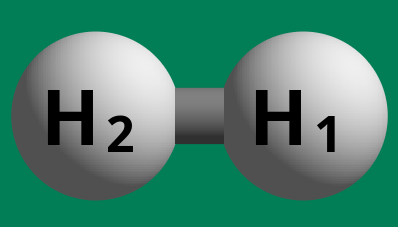

import gzip
from pathlib import Path
from ase.build import molecule
import matplotlib.pyplot as plt
from chemparseplot.parse.orca import geomscan
---------------------------------------------------------------------------
ModuleNotFoundError Traceback (most recent call last)
Cell In[1], line 3
1 import gzip
2 from pathlib import Path
----> 3 from ase.build import molecule
4 import matplotlib.pyplot as plt
6 from chemparseplot.parse.orca import geomscan
ModuleNotFoundError: No module named 'ase'
Geometry Scan¶
Often it is of interest to scan for energies over a particular aspect of molecular geometry. Here we consider the example of scanning over the bond length of the H2 molecule.
System construction¶
For simplicity, we will just use ase for this:
h2 = molecule("H2")
h2.write("data/h2_base.xyz", comment="\n")
This can be visualized via ase gui h2_base.xyz or similar, to see[1]:

Note that for ORCA, we need the “plain” .xyz file, so we need to remove the
metadata added by ase, hence the newline comment.
ORCA Input¶
To run orca, we can use an input file such as:
!OPT UHF def2-SVP
%geom Scan
# B <atmid1> <atmid2> = init, final, npoints
# Converted from Angstrom to Bohr
B 0 1 = 7.5589039543, 0.2116708996, 33
end
end
*xyzfile 0 1 h2_base.xyz
Execution¶
Following the best practices for running ORCA, we have[2]:
export PATH=$PATH:/blah/orca_5_0_4_linux_x86-64_openmpi411/
mkdir uhf
cp orca.inp h2_base.xyz uhf
cd uhf
($(which orca) orca.inp 2>&1) | tee scan_uhf
Also because it is annoying to keep blobs of text, and because it is large:
gzip -9 -c scan_uhf > scanuhf.gz
mv scanuhf.gz ../data/
Analysis with chemparseplot¶
Now we can finally get to the good bit. Rather than painstakingly parsing “by
eye” the scan_uhf file, we will simply use chemparseplot:
orcaout = gzip.open(Path("data/scanuhf.gz"), 'rt').read()
act_energy = geomscan.extract_energy_data(orcaout, "Actual")
print(act_energy)
Note that there are units attached, which makes subsequent analysis much easier,
since pint will ensure that the correct units are always used.
act_energy[0].to('angstrom')
Plotting¶
This is simple enough to plot.
fig, ax = plt.subplots(figsize=(4, 4), dpi=100)
ax.scatter(act_energy[0].magnitude, act_energy[1].magnitude)
However, this is not super satisfying, and since this is a “supported” workflow, we can leverage chemparseplot instead.
# Create an instance of TwoDimPlot
twodim_plot = TwoDimPlot()
# Set the units for the plot
twodim_plot.set_units('angstrom', 'hartree')
# Add data (EnergyPath instances) to the plot
energy_path1 = EnergyPath('Path 1', np.linspace(0, 10, 30) * ureg.angstrom, np.random.uniform(-1, 0, 30) * ureg.hartree)
energy_path2 = EnergyPath('Path 2', np.linspace(1, 9, 25) * ureg.angstrom, np.random.uniform(-0.5, 0.5, 25) * ureg.hartree)
twodim_plot.add_data(energy_path1)
twodim_plot.add_data(energy_path2)
# Display the plot
twodim_plot.show_plot("Energy Paths")
twodim_plot.set_units('bohr', 'electron_volt')
twodim_plot.fig